Production
Deux façons de faire grandir une plante.
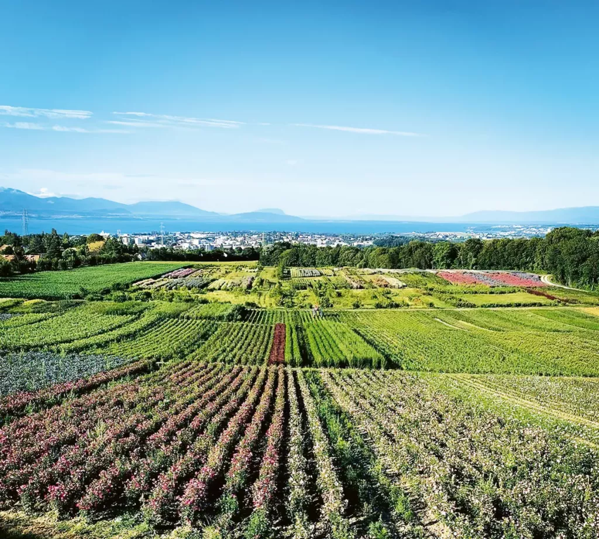
En pleine terre
Sur 25 hectares, arbustes à fleurs, persistants et indigènes, arbres-tiges, plantes pour haies et conifères poussent sur des parcelles classées par catégories. Les grands sujets ont l’espace, le temps et le sol vivant dont ils ont besoin : jusqu’à 12 mètres de haut.
Professionnels et particuliers peuvent choisir leur sujet directement sur place.
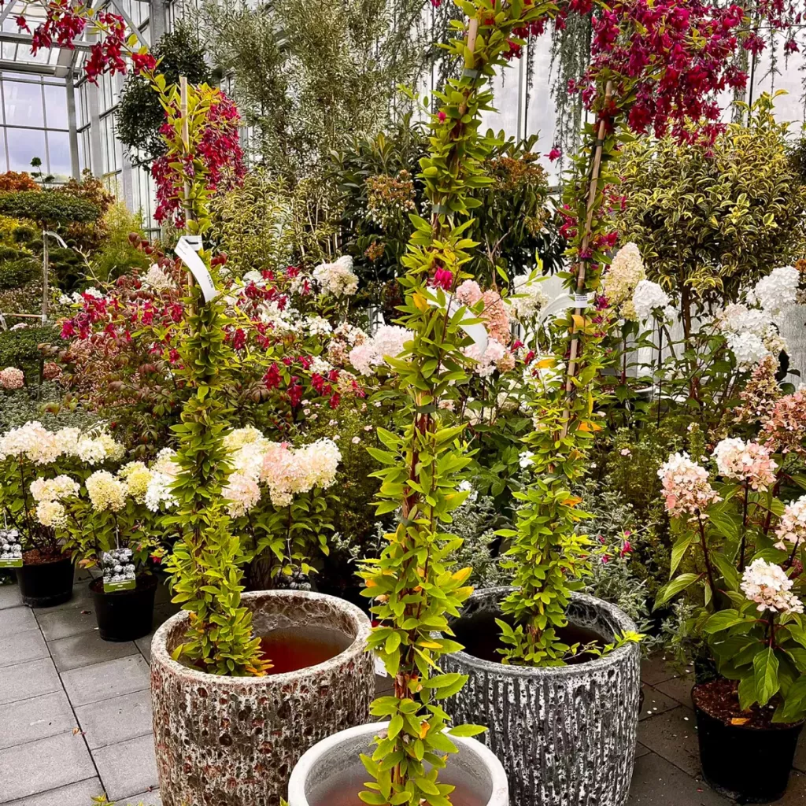
En pot
Près de 500 000 végétaux d’extérieur, cultivés sur site et acclimatés à nos régions. Ils se plantent au jardin ou vivent en bac sur une terrasse ou un balcon, selon l’essence et l’exposition.
Assortiment
Des jeunes plantes aux végétaux adultes.
Chaque projet trouve son sujet dans le catalogue en ligne.
- Arbustes et arbres d’ornement
- Arbustes à fleurs
- Arbustes à feuillage persistant
- Arbustes indigènes
- Érables du Japon
- Conifères nains
- Conifères à moyen et grand développement
- Bambous
- Plantes pour terre de bruyère
- Rhododendrons, azalées
- Plantes grimpantes
- Plantes tapissantes
- Plantes pour haies
- Arbres tiges ou d’avenues
- Conifères sur petites tiges
- Plantes vivaces à fleurs
- Fougères
- Plantes aromatiques
- Graminées ornementales
- Arbres fruitiers
- Arbustes à baies
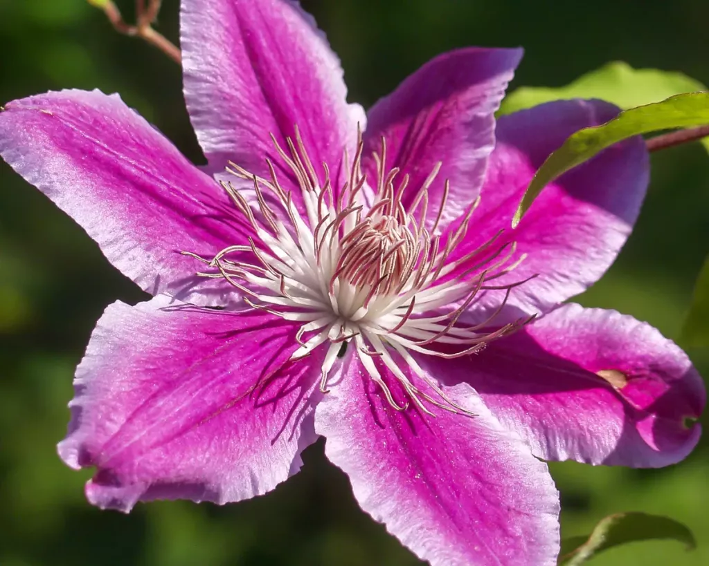
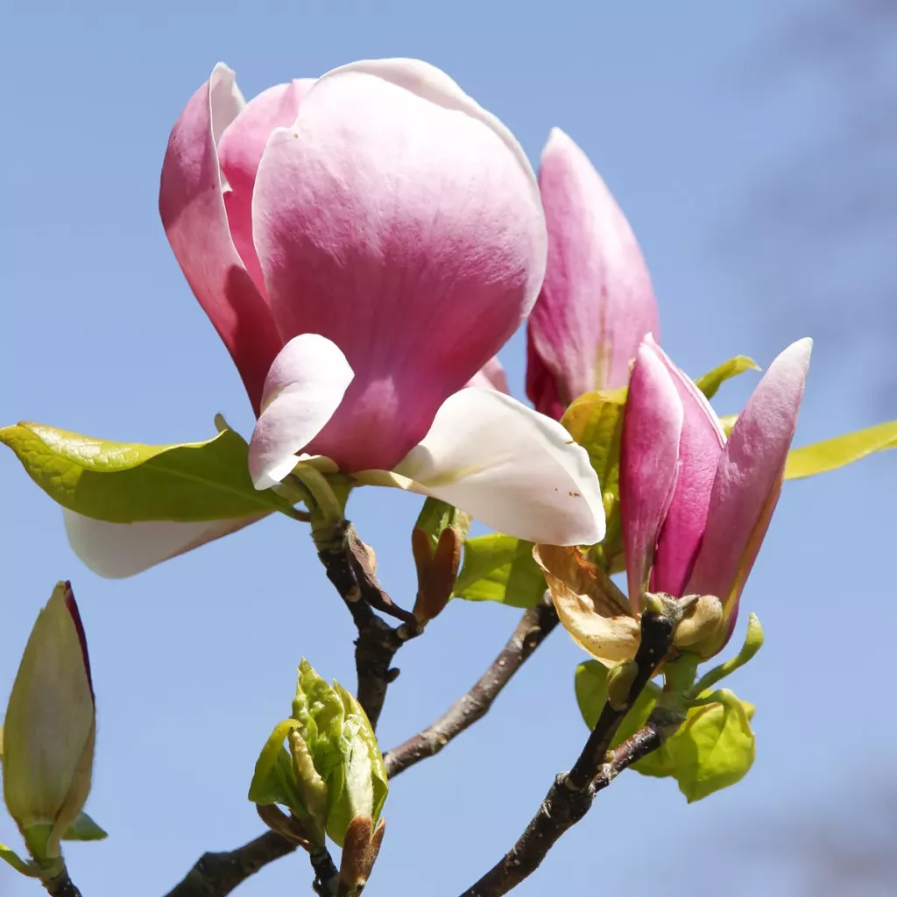
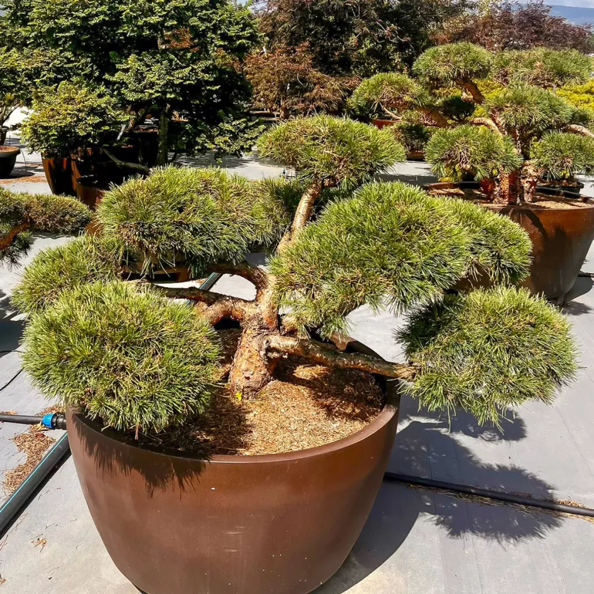
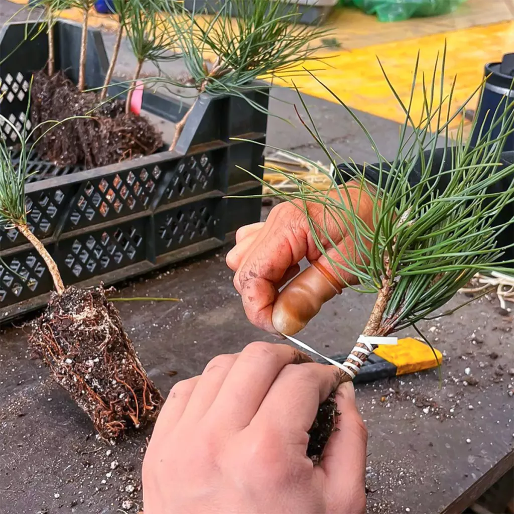
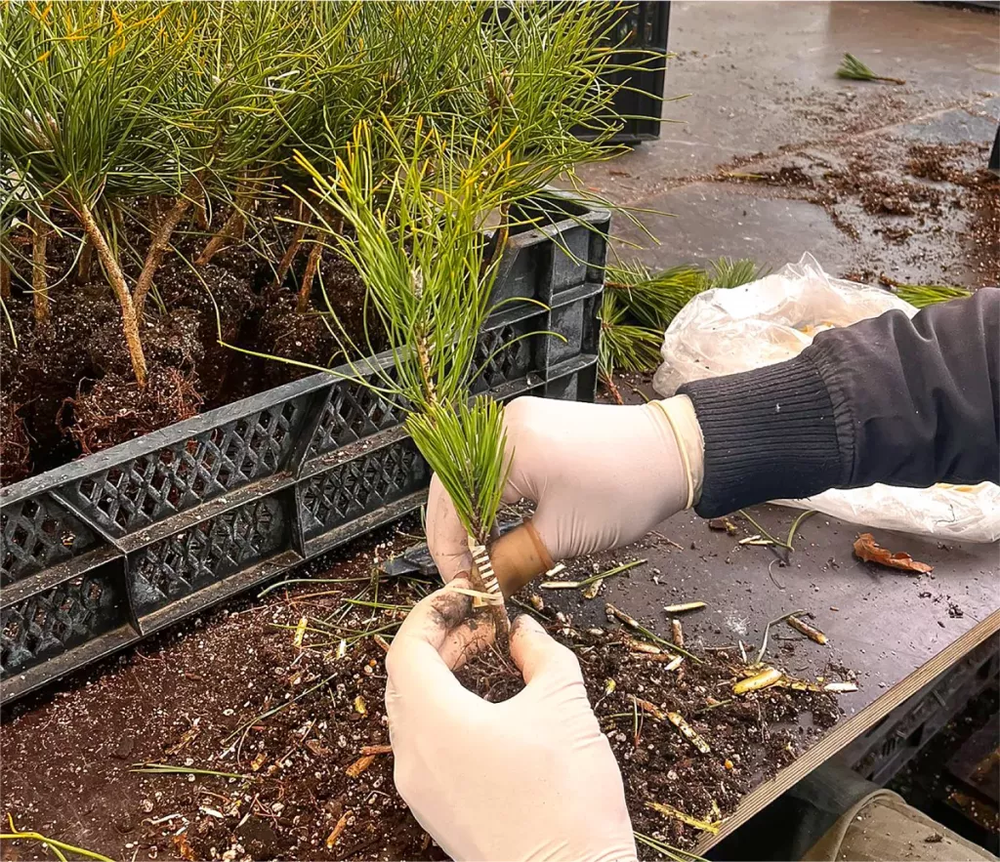
Multiplication
C’est ici que naissent les plantes.
À partir d’un semis, d’une bouture ou d’une greffe, selon l’espèce et le résultat recherché. Multiplier soi-même, c’est reproduire fidèlement une variété et suivre le végétal dès ses premiers mois.
La halle de multiplication réunit :
- un atelier de greffage et de bouturage
- une chambre froide pour conserver les greffons
- des espaces climatisés, réglés selon chaque espèce
300 000 boutures, 150 000 greffes.
Services
Du premier appel à la plantation.
Conseil, de P à S
Premier contact. Vente, terrain, production ou administration : l’équipe vous accompagne selon l’exposition, le sol, le climat et l’usage du lieu.
Service après-vente. Une fois les plantes livrées, nous répondons à vos questions et expliquons les réactions naturelles des végétaux.
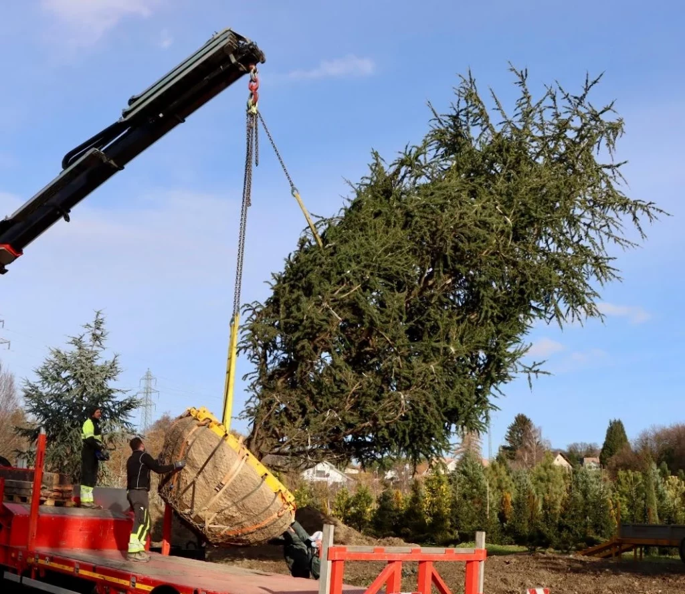
Livraisons
Un logisticien et quatre chauffeurs, formés au paysagisme ou rompus à la pépinière. Véhicules légers, camions-bâches, semi-remorques et camion-grue couvrent toute la Suisse.
Retrait en pépinière, livraison à votre adresse ou directement sur le lieu de plantation. Le shop en ligne livre aussi les particuliers. Pour l’Europe de l’Ouest, des transporteurs spécialisés prennent le relais.
La qualité, étape par étape
- Choix du substrat pour une mise en culture adéquate
- Suivi du développement des jeunes plantes
- Rempotage ou mise en terre selon le cycle de vie
- Tailles planifiées pour ramifier et fortifier
- Sélection des plantes selon le projet
- Préparation et nettoyage avant la vente
- Étiquetage de qualité, gage de traçabilité
Contrôle phytosanitaire interne · membre de Jardin Suisse · inspections sous la supervision de l’OFAG
Histoire
Cinq générations, une même constance.
- 1898
Léon Meylan, parti de la Vallée de Joux, s’installe à Renens près d’une nouvelle gare. Premières cultures, surtout des arbres fruitiers.
- 1929
Son fils André reprend l’exploitation et l’agrandit.
- 1955
Jean-Pierre, troisième génération, renforce la multiplication des végétaux et introduit la mécanisation.
- 1981
Inauguration du Garden Center, pour la vente au détail aux particuliers.
- 1986
Yves et Michel Meylan modernisent : nouvelles infrastructures, automatisation, outils de commande.
- 2005
Premières exportations en Europe occidentale.
- 2009
Lancement du shop en ligne.
- 2013
Rachel, pépiniériste, puis Jérôme, économiste d’entreprise (2015), rejoignent l’entreprise et en président aujourd’hui les destinées.
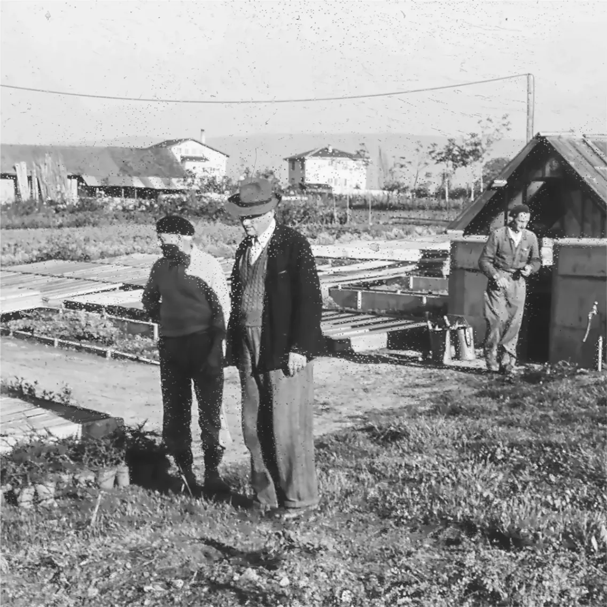
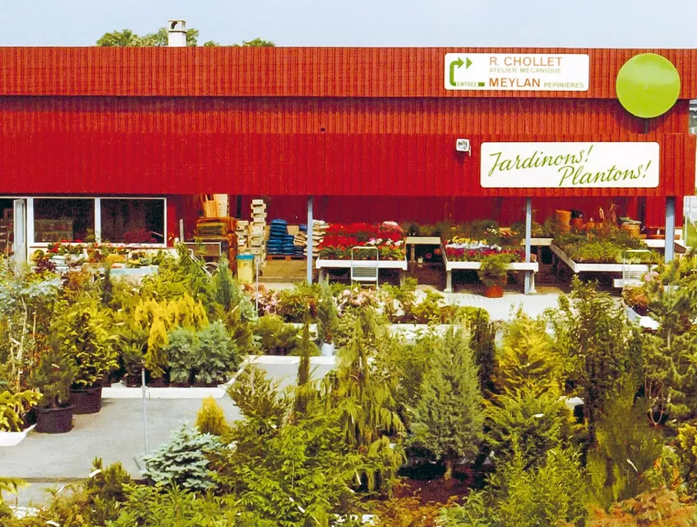
Contact
Venez choisir votre arbre.
Pépinières Meylan SA
Ch. des Roseyres 208
1400 Yverdon-les-Bains
| Vente en gros | Lundi au vendredi7 h 30 – 12 h · 13 h – 17 h |
|---|---|
| Vente au détail | Lundi au vendredi8 h 30 – 12 h · 13 h – 17 h 30Samedi9 h – 17 h, non-stopDimanchefermé |
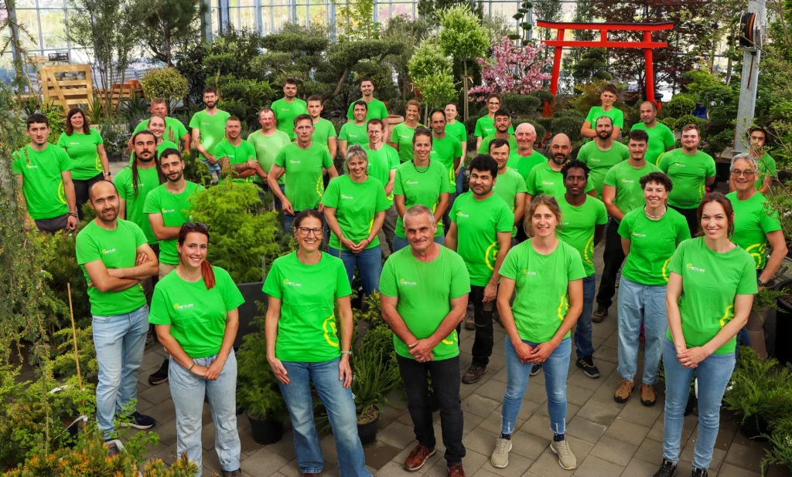
Des équipes fidèles à l’entreprise, parfois depuis plus de trente ans.